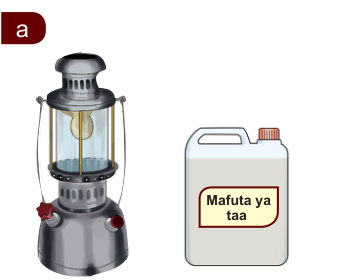
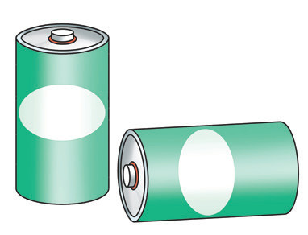

Nishati ya mwanga
Chunguza Kielelezo namba 6, kisha soma maelezo yanayofuata.
a

Mwanga wa taa ya karabai
b
Mwanga wa jua
c
Mwanga wa kurunzi

Betri
Kielelezo namba 6: Vitu vinavyotoa nishati ya mwanga
Mwanga ni aina mojawapo ya nishati. Picha namba a, b, na c zinaonesha vitu mbalimbali vinavyotoa nishati ya mwanga. Kuna vyanzo mbalimbali vya nishati ya mwanga. Vyanzo hivyo ni vile vya asili na visivyo vya asili. Jua ndiyo chanzo kikuu cha asili cha mwanga. Vyanzo vya mwanga visivyo vya asili ni kama vile mshumaa, fueli katika kibatari, karabai, na kandili. Pia, betri ni chanzo cha nishati ya mwanga katika kurunzi.